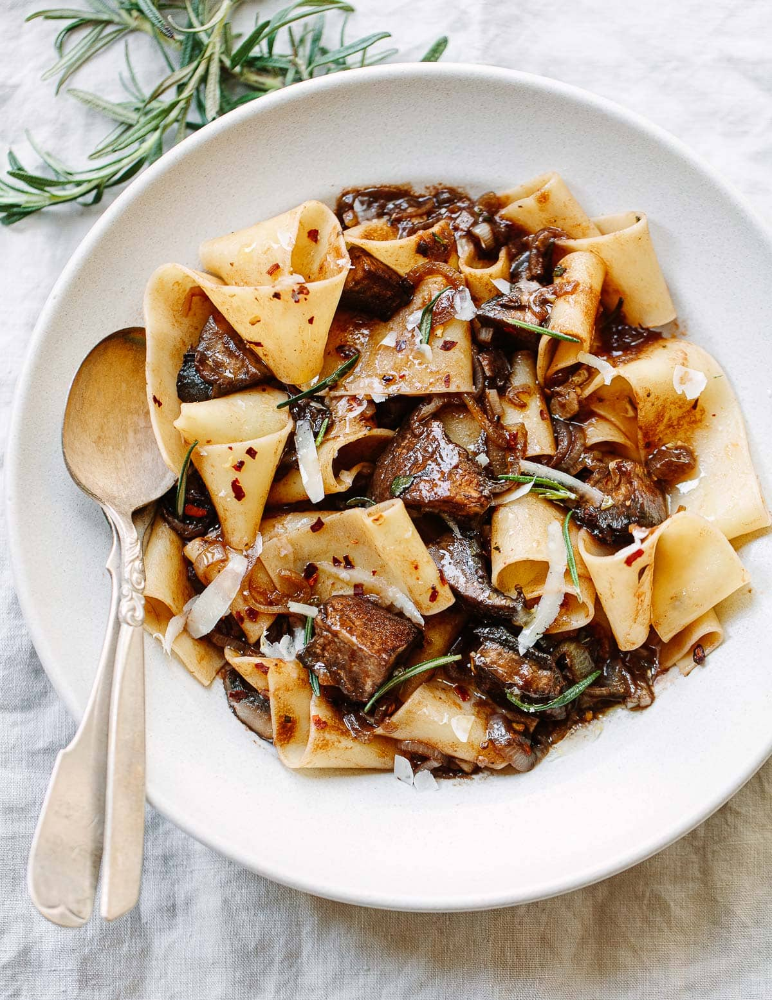

Homemade Pasta

Description
This receipe for making hand made pasta as well as a white wine sauce to go with!
For this receipe, we will need the following:
- Eggs
- 00 Flour
- Extra Virgin Olive oil
- Salt
- On a clean surface, make a nest with the flour.
- Add egdd and glently use a fork to break up the eggs mixing it with the flour. Try not to break through the flour walls.
- Work the mixture unti you can form a ball.
- Knead the dough for 10-15 minutes until silky and smooth.